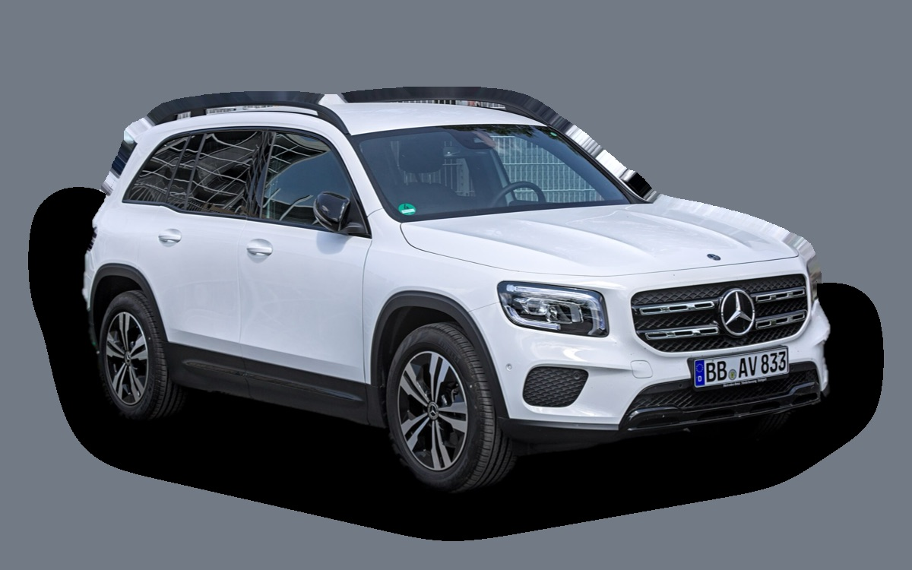

Vad kostar en Mercedes-Benz GLB per månad?
En Mercedes-Benz GLB från 2023 kostar cirka 4 919 kr i månaden, allt inräknat.


Månadskostnad per årsmodell
| Årsmodell | Version i beräkningen | Pris | Per månad | Betyg |
|---|---|---|---|---|
| 2026 | GLB 200, 5 säten, AMG Advanced Edition | 442 000 kr | 6 029 kr | D |
| 2023 | GLB 200, 5 säten, AMG Advanced Edition | 359 000 kr | 4 919 kr | C |
| 2020 | GLB 200, 5 säten, AMG Advanced Edition | 294 000 kr | 4 453 kr | C |
Räknat på 5 års ägande och 1 250 mil per år, med bränslepriser från 2026-10-22. Månadskostnaden innehåller värdeminskning, drivmedel, service och reparationer, försäkring och fordonsskatt.
Så fördelas kostnaden för en 2023:a
- Värdeminskning: 2 090 kr/mån
- Drivmedel: 1 487 kr/mån
- Service och reparationer: 677 kr/mån
- Försäkring: 545 kr/mån
- Fordonsskatt: 120 kr/mån
Leasa eller köpa ny?
Mercedes-Benz PrivatLeasing erbjuder GLB 250+ electric Advanced Edition från 6 495 kr i månaden i 36 månader och 1 500 mil per år. Så mycket kostar det jämfört med att köpa samma bil ny för 619 000 kr och sälja den efter 36 månader, räknat på 1 250 mil per år och 5 procents ränta.
Leasa är billigast 1 417 kr mindre per månad, 51 012 kr på 36 månader.
| Per månad | Leasa | Köpa |
|---|---|---|
| Leasingavgift, 1 250 mil per år | 6 495 kr | – |
| Uppläggnings- och aviavgift | 84 kr | – |
| Värdeminskning | – | 5 555 kr |
| Ränta på pengarna, 5 % | – | 2 163 kr |
| Service och reparationer | ingår | 279 kr |
| Drivmedel | 418 kr | 418 kr |
| Försäkring | 824 kr | 824 kr |
| Fordonsskatt | 30 kr | 30 kr |
| Totalt per månad | 7 851 kr | 9 268 kr |
| Totalt på 36 månader | 282 636 kr | 333 648 kr |
Erbjudandet gäller 1 500 mil per år. Kör du mindre blir leasingavgiften densamma. Mercedes-Benz PrivatLeasing: GLB 250+ electric Advanced Edition, 36 månader, 1 500 mil per år, service ingår, fast avgift. Uppläggningsavgift 695 kr och aviavgift 65 kr i månaden. Källa: mercedes-benz.se, avläst 27 oktober 2026, gäller till och med 31 december 2026.
Köpa: 619 000 kr för en ny bil i samma version, och 419 037 kr tillbaka när du säljer den efter 3 år. Restvärdet bygger på annonspriserna för 3 år gamla bilar, justerat för att du kör 3 750 mil på 3 år i stället för typiska 6 400 mil. Räntan är vad pengarna kostar: ränta på ett billån, eller räntan du går miste om på sparade pengar. Drivmedel, försäkring och skatt är desamma. Övermil och onormalt slitage betalas när leasingbilen lämnas tillbaka, och byter du in en köpt bil hos en handlare får du oftast mindre än annonspriset.
Räkna med din egen körsträcka och ränta · Alla leasingbilar jämförda
Begagnatpriser i annonser
| Årsmodell | Medianpris | Annonser | Typiskt miltal |
|---|---|---|---|
| 2026 | 644 400 kr | 20 | 1 300 mil |
| 2025 | 459 400 kr | 24 | 1 900 mil |
| 2024 | 449 400 kr | 8 | 3 700 mil |
| 2023 | 334 900 kr | 9 | 8 200 mil |
| 2022 | 334 400 kr | 8 | 8 700 mil |
| 2021 | 339 900 kr | 11 | 10 300 mil |
| 2020 | 309 000 kr | 9 | 11 800 mil |
Medianpriset i svenska annonser per årsmodell i oktober 2026 (källa: Blocket, AutoUncle). Annonspriser är utgångspriser, och slutpriset kan bli lägre.
Motorer och versioner
| Motor | Drivmedel | Effekt | 0–100 km/h | Förbrukning (WLTP) | Räckvidd | Årsmodeller | Pristillägg |
|---|---|---|---|---|---|---|---|
| GLB 200 | Bensin | 163 hk | 9,1 s | 6,9 l/100 km | – | från 2020 | – |
| GLB 220 d 4MATIC | Diesel | 190 hk | 7,6 s | 5,8 l/100 km | – | från 2020 | +47 000 kr |
| GLB 250+ el | El | 272 hk | 7,4 s | 16,5 kWh/100 km | 631 km | från 2026 | +177 000 kr |
- Säten: 5 säten, 7 säten (+20 000 kr)
- Utrustning: AMG Advanced Edition
Fakta
- Kaross
- SUV
- Årsmodeller
- sedan 2020
- Nypris från
- 442 000 kr
- Bagage
- 570 liter
- Euro NCAP
- 5 av 5 stjärnor
- Nybilsgaranti
- 3 år
- Driftsäkerhet
- 3 av 5
- Helförsäkring, uppskattning
- 8 400 kr/år
- Service, uppskattning
- 5 000 kr/år
Vanliga fel att ha koll på
- Dubbelkopplingslåda (8G-DCT), reparation cirka 18 000 kr
- AdBlue-system och NOx-givare (diesel), reparation cirka 6 000 kr
Felen gäller vissa motorer och årsmodeller. I kalkylatorn räknas risken för just den version du väljer.
Fördelar och nackdelar
Fördel
Kantig och rymlig med sju säten som tillval.
Nackdel
Hög förbrukning för storleken och dyr service.
Liknande bilar
 Mazda CX-604 889 kr/mån som 2023:a
Mazda CX-604 889 kr/mån som 2023:a Kia Sorento4 855 kr/mån som 2023:a
Kia Sorento4 855 kr/mån som 2023:a Skoda Elroq4 772 kr/mån som 2026:a
Skoda Elroq4 772 kr/mån som 2026:a BYD Seal U5 072 kr/mån som 2026:a
BYD Seal U5 072 kr/mån som 2026:a Mercedes-Benz GLA4 761 kr/mån som 2023:a
Mercedes-Benz GLA4 761 kr/mån som 2023:a Volvo XC604 750 kr/mån som 2023:a
Volvo XC604 750 kr/mån som 2023:a
Uppdaterad 2026-10-27 · annonsdata okt 2026